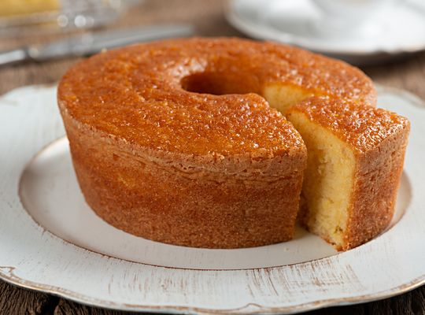

Home |
Doces |
Salgados |
Feedback |
|---|

Você sabe qual o segredo do bolo de fubá cremoso? O óleo! Esse ingrediente é o segredo de todos os bolos cremosos e molhadinhos, pois mantém a umidade no bolo por mais tempo.
Apesar de ser uma receita de bolo de fubá cremoso de liquidificador, fique atento para a densidade da massa e, se achar pesada para o seu aparelho, opte por bater os elementos líquidos e depois incorporar aos ingredientes secos, terminando de bater à mão.Se você quiser um bolo de fubá com coco, você pode fazer seu bolo de fubá com leite de coco e coco ralado para deixá-lo ainda mais saboroso.